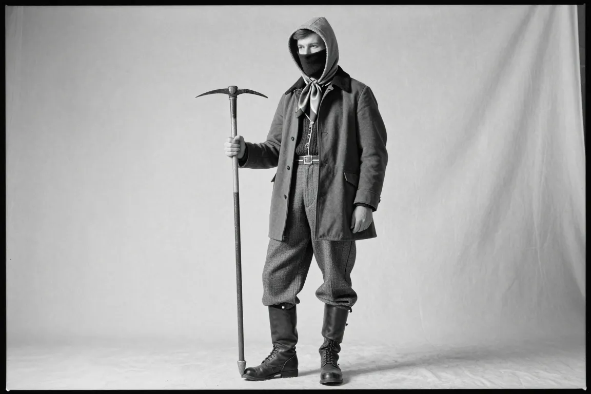

mote · 1920–1953 · også: Everest-ekspedisjonsdrakt, Alpin tweed og gabardin, Klatredrakt fra før nylon
Drakten til klatreren før nylon: lag av ull, silke og flanell under en vindtett gabardinanorakk, med tweedbukser, strømpebind og spikerbeslåtte støvler.

Kjerneidé
Varme kommer fra mange tynne lag, og vinden er fienden. Klatreren bærer ull mot huden og ett tett bomullsskall ytterst.
Designprinsipper
Bær 4 til 6 tynne lag, slik at klatreren kan legge til eller ta av ett ved hver rast.
Legg ull eller silke mot huden, for å holde på varmen når den er våt.
Lukk ytteranorakken med en dyp hette og en snor i fållen.
Vev ytterstoffet tett nok til å stoppe en vind på 40 km/t.
Skjær buksene vide i låret og trange i kneet, over en ullpuss.
Skjær ermet langt, med en mansjett som lukker seg over hansken.